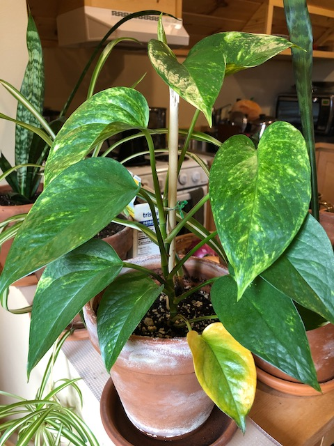

plant-tour/Pothos
Published 2020-10-04

My pothos. Another plant from mom. I love this guy. He’s so pretty.
These are sometimes mistakingly labeled as philodendrons, which they are not. Interestingly though, even the “correct” common name pothos is really a misnomer. When first described in 1880 it was named Pothos aureus. However, it later turned out that that classification was incorrect, and it’s corrent name is Epipremnum aureum
They are also known by a whole mess of other names: golden pothos, Ceylon creeper, hunter’s robe, ivy arum, money plant, silver vine, Solomon Islands ivy, marble queen, and taro vine, devil’s vine and devil’s ivy.